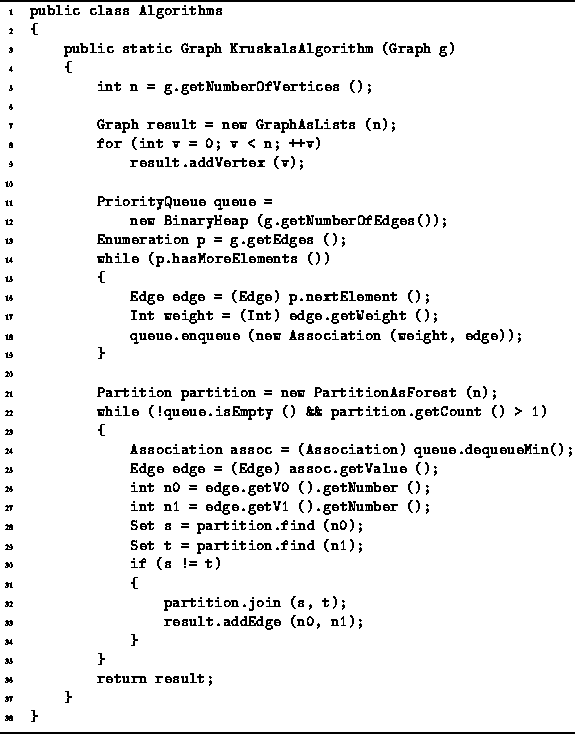

Data Structures and Algorithms
with Object-Oriented Design Patterns in Java
Data Structures and Algorithms
with Object-Oriented Design Patterns in Java
An implementation of Kruskal's algorithm
is shown in Program  .
The KruskalsAlgorithm method takes as its argument
an edge-weighted, undirected graph.
This implementation assumes that the edge weights are instances of the
Int class defined in Program .
The method computes the minimum-cost
spanning tree and returns it in the form of an edge-weighted undirected graph.
.
The KruskalsAlgorithm method takes as its argument
an edge-weighted, undirected graph.
This implementation assumes that the edge weights are instances of the
Int class defined in Program .
The method computes the minimum-cost
spanning tree and returns it in the form of an edge-weighted undirected graph.

Program: Kruskal's algorithm.
The main data structures used by the method are
a priority queue to hold the edges,
a partition to detect cycles and a graph for the result.
This implementation uses a BinaryHeap (Section )
for the priority queue (lines 11-12),
a PartitionAsForest (Section )
for the partition (line 21)
and a GraphAsLists for the spanning tree (line 7).
 Copyright © 1998 by Bruno R. Preiss, P.Eng. All rights reserved.
Copyright © 1998 by Bruno R. Preiss, P.Eng. All rights reserved.